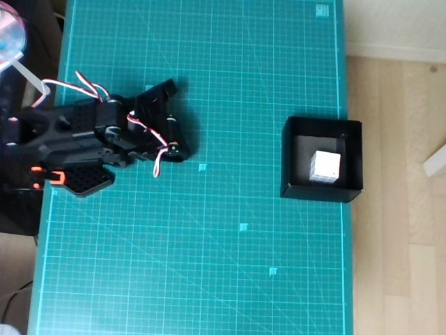

HwanWoong Jeong정환웅
Undergraduate · Data Science & Artificial Intelligence · Kangnam University
I want machines to understand the world well enough to act in it — not just within the data they were shown.
Now — Teaching a low-cost SO-101 arm to pick and place with SmolVLA, calibrating a MuJoCo twin to the real robot, and comparing learned policies with an LLM agent that plans and verifies each step. The gap between the two made me curious about world models that learn how the world works from observation and use it to plan.
Research interests
Robot learning & VLAfocus
Vision-language-action models, imitation learning, DAgger and sim-to-real transfer on real hardware.
World models & planningfocus
How agents could learn the rules of the physical world from observation, and plan with them in new situations.
LLMs & NLP
Language models as reasoning and tool-using agents, including for robot control.
AI safety & red-teaming
Evaluating LLM safety, and checking whether the judges used in those evaluations can be trusted.
Explainable AI
Making model decisions interpretable, so their failures can be understood rather than just measured.
Energy & tabular ML
Renewable-energy forecasting and gradient-boosted models (XGBoost) on real-world tabular data.
Selected project

SO-101 Pick-and-Place: Sim-to-Real Experiments
A learned policy memorizes where the cube was; a calibrated simulator, broad data and DAgger push sim generalization from 4% to 63%; an LLM agent with a hand-built world model places the cube from unseen positions — and still fails on an unfamiliar bottle.
Education
- Kangnam UniversityB.S. in Data Science, double major in Artificial Intelligence